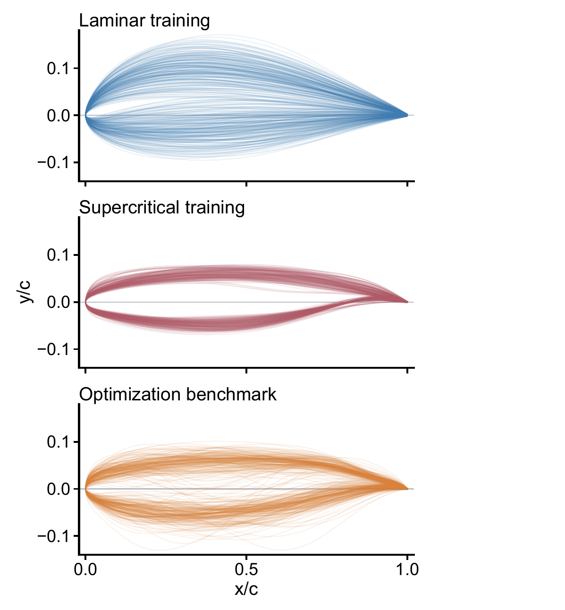
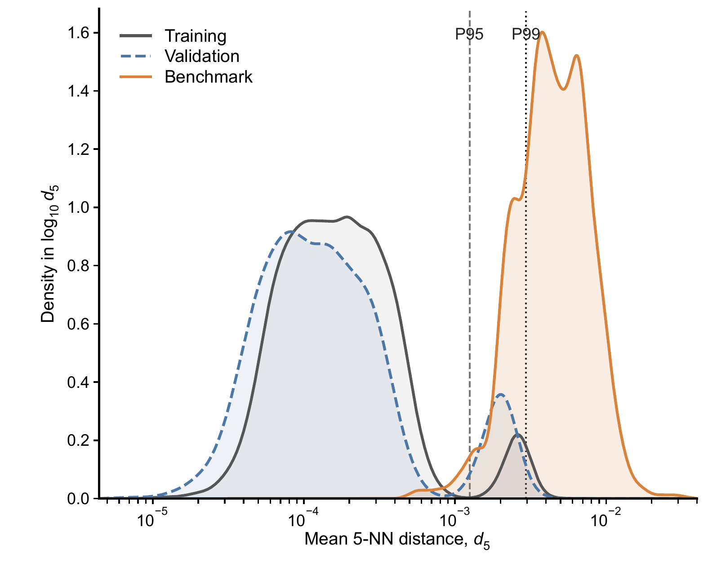
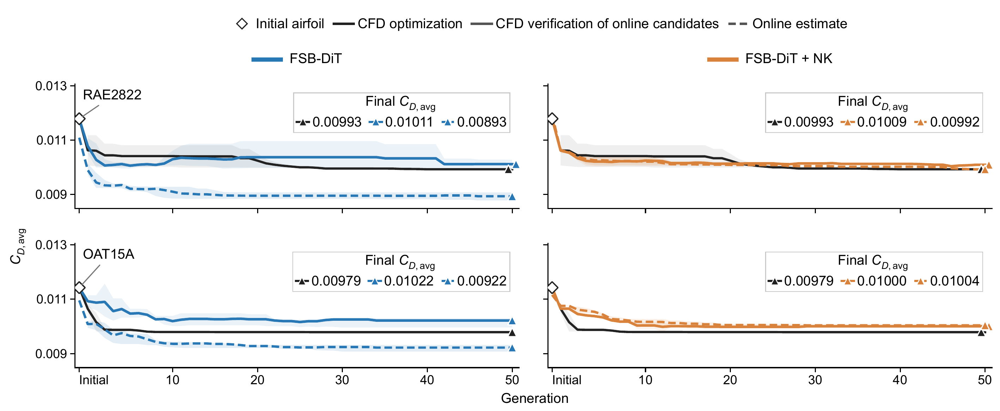
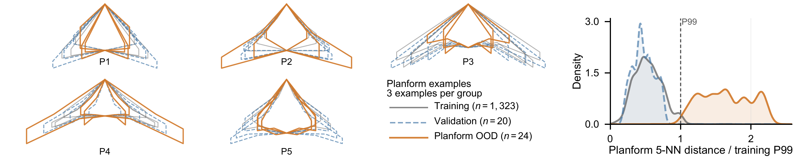
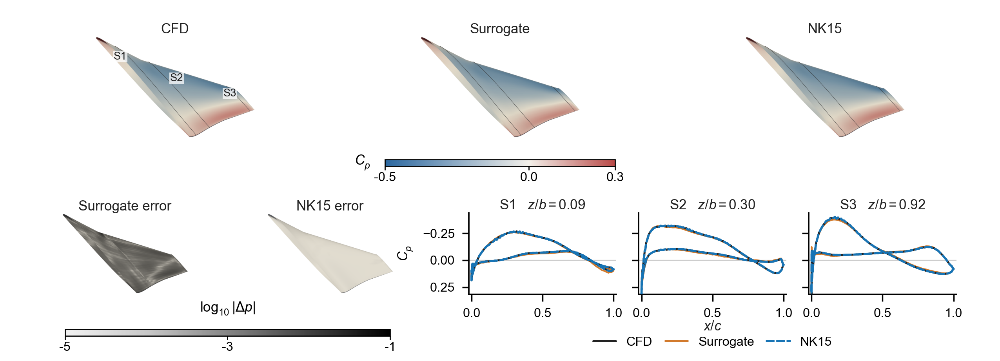
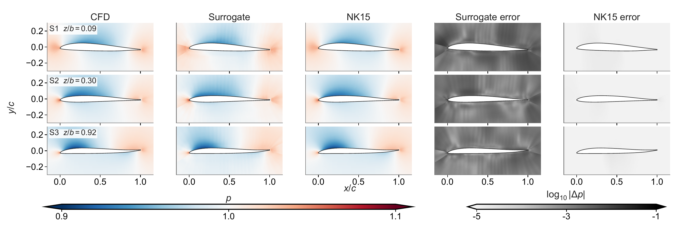

Tsinghua University · 2026
Reliable and efficient steady CFD from surrogate predictions through Newton-Krylov correction
1 School of Aerospace Engineering, Tsinghua University 2 State Key Laboratory of Advanced Space Propulsion, Tsinghua University * Corresponding author
Abstract
Neural surrogates can evaluate flow fields rapidly, but their reliability degrades under out-of-distribution geometries. We introduce a solver-coupled surrogate-Newton framework that treats a surrogate prediction as a high-quality initial state for Newton-Krylov correction. The learned model supplies global flow structure; the numerical solver supplies residual-based verification and terminal accuracy.
On an optimization-derived transonic airfoil benchmark, the framework reduces the median residual L2 ratio by more than seven orders of magnitude while lowering field and aerodynamic errors. In supercritical-airfoil optimization it improves online reliability with a 15.5-fold generation-level speedup over CFD, and the same principle extends to three-dimensional flying-wing configurations.
Method
Prediction supplies structure; the solver supplies acceptance.
Geometry and flow conditions are first mapped to a complete steady-flow state. That prediction is then injected into the target CFD discretization and corrected until its native nonlinear residual satisfies the prescribed tolerance.
- 01PredictInfer the full flow and turbulence state.
- 02EvaluateMeasure the native discrete residual.
- 03CorrectApply Jacobian-free Newton–Krylov updates.
- 04AcceptStop at the target solver tolerance.
Surrogate initializationÛ = S(G, θ)
Local correctionJ(Uk)ΔU = −R(Uk)
Numerical acceptance‖R(UNK)‖ ≤ ε
Optimization-derived OOD benchmark
The evaluation set is built from intermediate airfoils visited by actual transonic optimization trajectories. Its geometric shift is measured explicitly in the 26-dimensional CST representation.


Solver consistency under geometric shift
Newton-Krylov correction reduces both the native residual and physical errors. The individual panels below separate aggregate benchmark statistics from representative pressure-field recovery.
{kind=link}
Reliable online aerodynamic optimization
A fixed Newton-Krylov budget transfers the offline recovery gains to iterative design, where each generation evaluates candidate geometries outside the original training distribution.

Extension to three-dimensional wings
We further evaluate the same coupling principle on flying-wing configurations with planforms deliberately shifted beyond the training distribution. Full-wing surface fields show the recovered three-dimensional structure, while spanwise sections expose the corresponding pressure-field correction in detail.



Code and interactive system
The public repository contains the static project page, demo application, scheduling layer, tests, and deployment documentation. The compute-backed interactive interface is currently deployed on a private server endpoint while authentication and public-access controls are being prepared.
BibTeX
@article{lei2026surrogate_newton,
title = {Reliable and efficient steady CFD from surrogate predictions
through Newton--Krylov correction},
author = {Lei, Mingcheng and Tang, Weishao and Zhang, Yufei and Chen, Haixin},
journal = {arXiv preprint arXiv:2608.04400},
year = {2026},
url = {https://arxiv.org/abs/2608.04400}
}